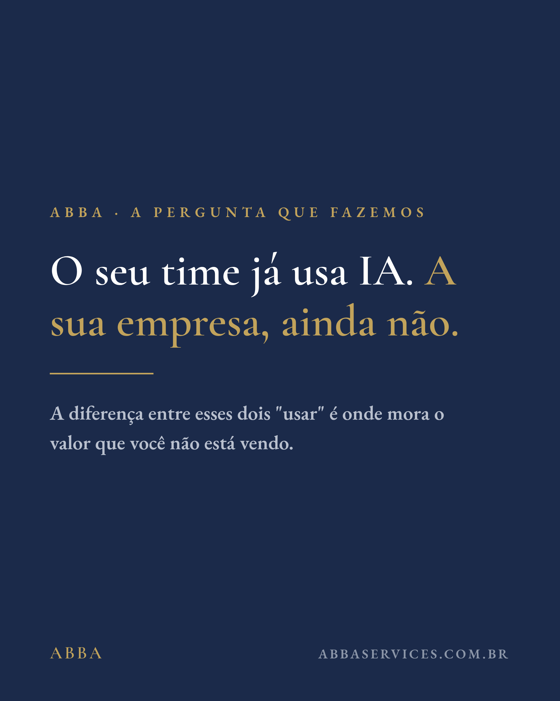
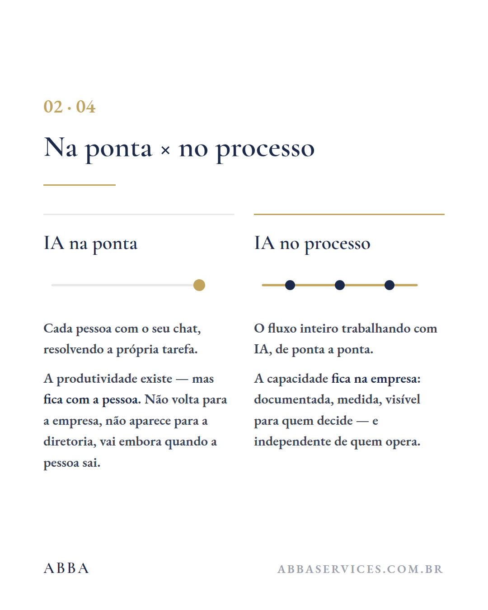
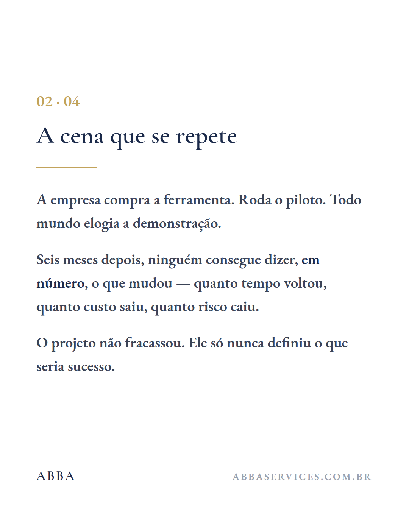

abba.consultoria
···
♡💬↗
abba.consultoria Uma pergunta que fazemos em toda reunião: o seu time usa IA — mas a sua empresa usa? … mais
Como o perfil aparece para quem chega depois dos três posts de lançamento. Números de seguidores ficam em branco de propósito — a doutrina proíbe métrica inventada, inclusive em prévia.

❐As três capas são navy. Vistas isoladas cada uma funciona; empilhadas na grade viram um bloco escuro único, e o perfil perde o respiro que o padrão editorial da ABBA tem no papel. Na página seguinte está a correção.
O recorte quadrado corta as capas. A arte é 4:5 (1080×1350) e a grade mostra 1:1 — o Instagram tira as bordas de cima e de baixo. As capas sobrevivem porque o texto está centralizado, mas o rodapé com a marca some da miniatura.
Três posts deixam a grade pela metade. Uma fileira preenchida e duas vazias é a aparência de perfil abandonado. Publicar os três no mesmo dia — ou emendar rápido com a grade-vitrine — resolve.
O Instagram preenche da esquerda para a direita e de cima para baixo, com o mais recente na primeira posição. Publicando 1 → 2 → 3, a grade mostra 3, 2, 1 — quem chega lê o último primeiro. É o comportamento normal da rede; a sequência continua fazendo sentido porque cada post fecha sozinho.
O mesmo perfil depois da grade-vitrine completa, com as capas alternando navy e branco. É assim que o padrão editorial da ABBA respira numa grade — a mesma lógica do material impresso, onde página escura e página clara se revezam.


 ❐
❐

 ❐
❐

❐
❐
Uma regra simples, e ela vale para sempre: nunca dois navy seguidos na mesma fileira. Como a grade tem 3 colunas, alternar a cor da capa a cada post produz automaticamente o xadrez — e o perfil ganha a mesma respiração do impresso.
Com nove a doze quadros, a identidade aparece: a serifa, o dourado sempre no mesmo papel, o rodapé assinado. Alguém que abre o perfil entende em três segundos que há um sistema por trás — que é exatamente o que uma consultoria que vende método precisa transmitir.
A arte é publicada em 4:5 (1080×1350) porque é o formato que ocupa mais tela no feed. Mas a grade do perfil mostra 1:1 e corta o topo e a base. A faixa dourada marca o que sobrevive — vale conferir isso em toda capa nova.
A regra que sai daqui: em toda capa nova, o bloco de texto tem de caber na faixa central — 80% da altura. Como os quadros já são compostos com o conteúdo centralizado verticalmente, isso acontece sozinho; o cuidado é só com capas de texto longo.
Como um post aparece no feed de quem segue — em 4:5 inteiro, com os pontos de navegação do carrossel e a legenda que está pronta no plano comercial.
É o formato vertical máximo que o Instagram aceita no feed. Ocupa mais tela que o quadrado, o que significa mais tempo de leitura antes do polegar rolar — decisivo para conteúdo com texto, que é o caso de tudo que a ABBA publica.
Só a primeira linha aparece antes do "… mais". Por isso as legendas do plano comercial abrem com a frase mais forte, nunca com saudação ou contexto. A pergunta do post 2 é o melhor exemplo: ela sozinha já para o polegar.
Quatro quadros por carrossel é o número certo para este conteúdo: capa, desenvolvimento, prova e fecho. Menos que isso não desenvolve; mais que isso perde gente no meio.